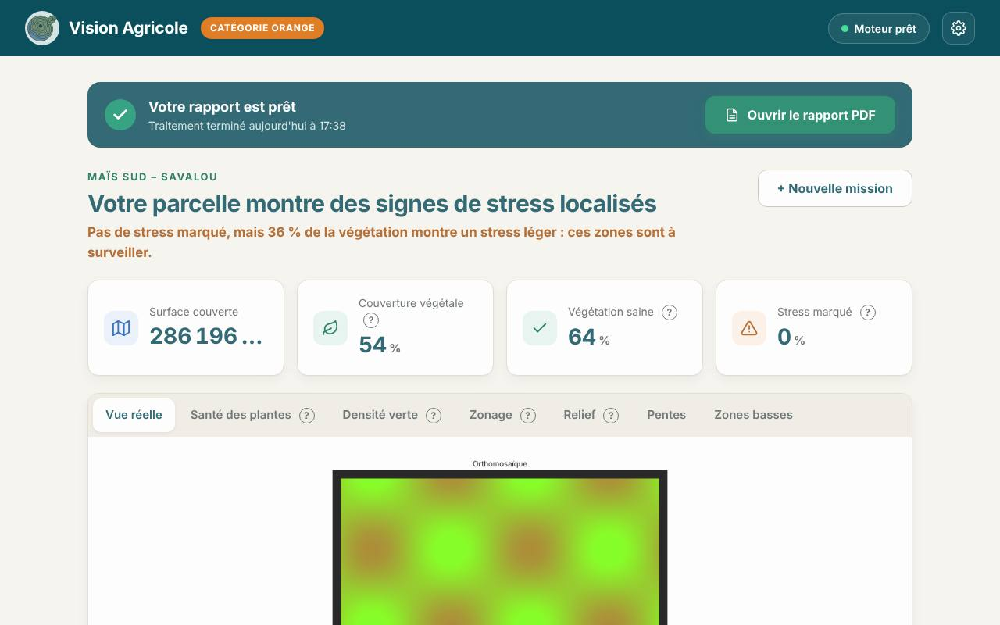

Sous le capot de Vision Agricole
Le fonctionnement en résumé, les prérequis et les fichiers exportés. Le détail complet est dans le README du dépôt.
Du dossier de photos au rapport
- Photos de droneUn dossier de photos aériennes JPG ou PNG (testé avec un DJI Mavic 3 Enterprise, photos RGB).
- Moteur NodeODM sous DockerLes photos sont traitées en local par NodeODM (OpenDroneMap). Il produit l'orthomosaïque et le modèle numérique de terrain (GeoTIFF).
- Indices de végétationVARI et ExG, calculés à partir des photos RGB.
- Zonage de gestionDécoupage de la parcelle en 2 à 6 zones. Pentes, ombrage et courbes de niveau sont tirés du modèle de terrain.
- Exports et rapportFichiers prêts pour QGIS dans livrables/qgis/ et rapport PDF en français.
Exports pour QGIS
Chaque traitement dépose des GeoTIFF géoréférencés dans livrables/ (orthomosaïque, modèle de terrain, carte VARI) et ces fichiers dans livrables/qgis/ :
| Fichier | Contenu |
|---|---|
| zonage_gestion.tif | Zonage en GeoTIFF, couleurs intégrées. |
| zonage_gestion.shp | Zones de gestion en polygones (champs ZONE, LIBELLE, SURF_HA, PCT_SURF, PCT_BRUT, VARI_MOY). |
| courbes_niveau.shp / .dxf | Courbes de niveau du modèle de terrain. |
| LISEZMOI_QGIS.txt | Système de coordonnées, mode d'emploi, points à noter. |
Dans QGIS, glissez les fichiers dans la fenêtre : ils se superposent sans réglage, car ils partagent le même système de coordonnées. Pour colorier le zonage vectoriel : Symbologie, Catégorisé, valeur ZONE.

Prérequis
- Windows. L'interface utilise WebView2, présent par défaut sur Windows 11 et sur la plupart des Windows 10 à jour. Sinon, l'application bascule seule sur l'interface classique.
- Docker Desktop, pour le moteur de traitement.
- Environ 8 Go de mémoire disponibles pour Docker. Sur un PC de 8 Go, choisissez la qualité « Rapide ».
Une fois Docker installé et démarré, une seule commande crée le moteur de traitement :
docker run -d -p 3000:3000 --name nodeodm opendronemap/nodeodmOuvrez http://localhost:3000 dans un navigateur pour vérifier : une page d'information JSON doit s'afficher. Pour l'arrêter puis le redémarrer : docker stop nodeodm et docker start nodeodm.
Le moteur NodeODM est un logiciel indépendant, sous licence AGPL-3.0. Il fonctionne séparément dans Docker et l'application le contacte par le réseau. L'adresse et le port du moteur se règlent dans les réglages avancés de l'application.
Limites connues
- VARI et ExG sont des approximations calculées sur des images RGB. Ce ne sont pas des NDVI : le DJI Mavic 3 Enterprise n'a pas de capteur multispectral.
- Le zonage exporté est lissé : il est plus net que l'image du rapport. Le champ PCT_BRUT donne la part de chaque zone avant lissage.
- Les exports ont été vérifiés par relecture avec GDAL, le moteur de lecture de QGIS. Ils n'ont pas encore été ouverts dans QGIS lui-même.
- L'altitude de vol n'est pas bloquée par l'application : elle est simplement reportée dans le PDF.
- La version Mac n'a pas été testée sur un vrai Mac.
- Les suggestions de cultures et les interprétations du rapport sont des aides à la décision. Elles ne remplacent pas l'avis d'un agronome ni une analyse de sol.